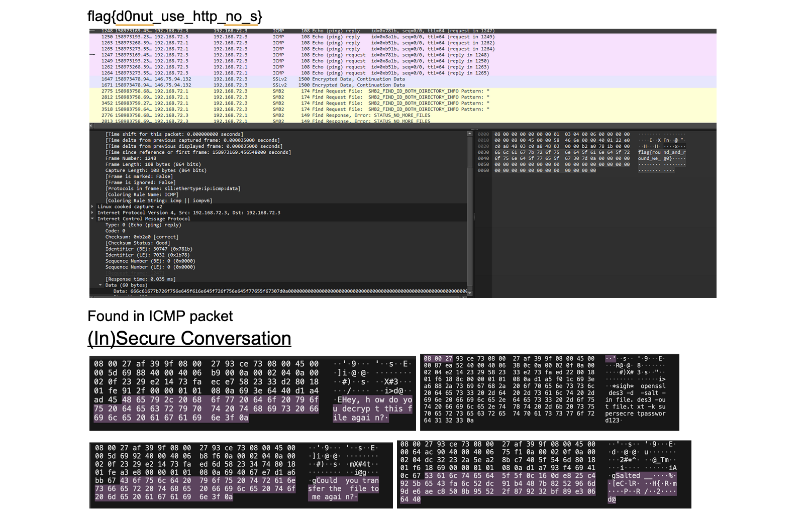
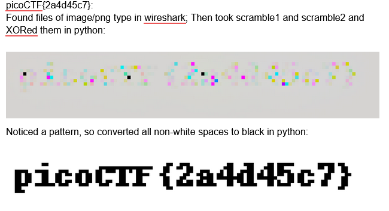
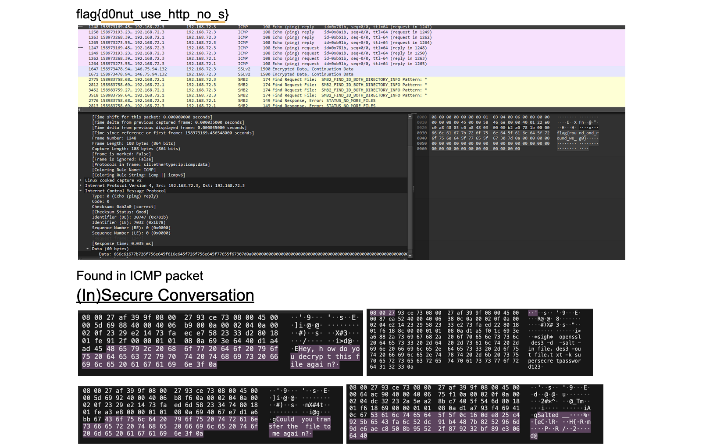
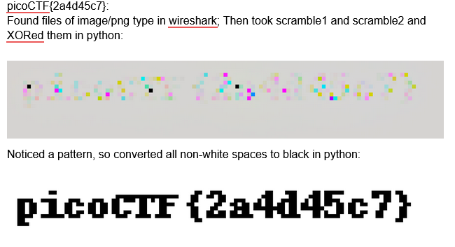

Program Structure
MIT BWSI (CyberOperations) - Online Program (Self-Paced for pre-course, Live collaborative zoom call course for main program)
The MIT BWSI CyberOperations program consisted of a pre-requisite qualifying program and a main program. The pre-req program spanned 6 weeks and covered Digital Systems (electronics up to logic gates, flip-flops, and latches), System Administration [(CPU, RAM, SSDs), (Ubuntu and Linux Terminal functionality and theory), (computer architecture as a whole), (RAID and safety systems)], C++ and Assembly programming basics (learning how each allocates memory), Networking Admin (network hardware, the internet, and intro to networking), and cryptography (including steganography, digital handshakes, private and public keys, etc...).
Learning Experience
Learned a lot about computer architecture, learned about a lot of different attack surfaces, spent days focusing on different attack surfaces (such as the network or application layer), and simulated attacks advanced went through different labs and CTFs (Capture the Flag).
Key Takeaways
This program has helped me not only learn and appreciate Linux, but also gave me an understanding of the theory for technical function of a computer that goes beyond just abstract knowledge. By simulating attacks (whether through writing our own program or reverse engineering code through Ghidra) we had to understand the complex theory behind memory allocation in assembly, what specifically we were attacking and how the system works. This understanding goes
beyond cybersecurity and gives me knowledge of what tools technically there are for building (for example the specifics on how servers work and how I can setup one based off of real life models).
Reflection
Overall I am grateful I had the opportunity to attend such an intense program and am excited to build on everything I have learnt in future research and projects!